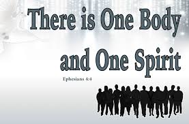

Three fuzzy "text-over-photo" cards. The cleanest fix for a verse card is crisp typeset text; a generic title graphic is usually best simply removed. (A fourth — the Proverbs 9:10 card — is the working half of the Fear-of-the-Lord pair, so it's left alone.)
D23 pull-quote, D24 pull-quote Eph 4:4, D25 remove, or "go with your picks."
For D23/D24 a "pull-quote" means I delete the fuzzy image and render the verse as the styled
block-quote mocked up below. Nothing changes on the live chapters until you decide; then I apply
on dev, you review, and we mirror only on your "mirror."
"Faith small as a mustard seed" card
This card is a fuzzy photo of Matt 17:20 — and that exact verse is already typeset in the text right below it. So the card is redundant: remove it and let the verse carry the moment as a pull-quote.
“He said to them, ‘Because of your little faith. For truly, I say to you, if you have faith like a grain of mustard seed, you will say to this mountain, “Move from here to there,” and it will move, and nothing will be impossible for you.’”Matt. 17:20 (ESV)
"One Body, One Spirit" — Ephesians 4:4 graphic
Note: unlike D23, this verse is not already in the text — the chapter quotes John 17:21 further down, but the card adds Eph 4:4. So removing the card outright would drop Eph 4:4. My pick: replace the fuzzy card with a typeset Eph 4:4 pull-quote at the top (mock-up below). If you'd rather not keep Eph 4:4 at all, say "D24 remove" and John 17:21 still covers the unity theme.

“There is one body and one Spirit—just as you were called to the one hope that belongs to your call—”Eph. 4:4 (ESV)
Handshake + word-cloud (learning / skills / growth)
A generic clip-art title graphic — no verse, low value (like the C3 word-cloud). The chapter's own 1 Tim 4:7-8 scripture stays untouched. I'd simply remove it.
Temporary DEV review page · noindex · removed once Group D lands.
My picks: D23 pull-quote · D24 typeset Eph 4:4 · D25 remove · (D22 Prov 9:10 pair left as-is).
The pull-quote styling is a small site-wide block-quote rule; it will also gently restyle the few
existing block-quotes (e.g. the Snowsill quote) — I'll check those look right before mirroring.